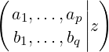
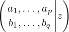
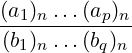
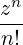
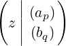
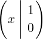
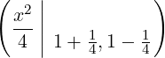

| Up | Next | Prev | PrevTail | Tail |
This package provides algebraic manipulations of generalized hypergeometric functions and Meijer’s G function. Generalized hypergeometric functions are simplified towards special functions and Meijer’s G function is simplified towards special functions or generalized hypergeometric functions.
Author: Victor Adamchik, with major updates by Winfried Neun.
The package SPECFN2 is designed to provide algebraic and numeric manipulations for some less commonly used special functions:
These functions are from the non-core package SPECFN2, which needs to be loaded before use with the command:
More information on the functions provided may be found on the website DLMF:NIST although currently not all functions may conform to these standards.
The (generalised) hypergeometric functions
|
pFq  |
are defined in textbooks on special functions as
|
pFq  = ∑ n=0∞  |
where (a)n is the Pochhammer symbol
| (a)n = ∏ k=0n−1(a + k). |
The function
|
Gpqmn  |
has been studied by C. S. Meijer beginning in 1936 and has been called Meijer’s G function later on. The complete definition of Meijer’s G function can be found in [PBM89]. Many well-known functions can be written as G functions, e.g. exponentials, logarithms, trigonometric functions, Bessel functions and hypergeometric functions.
Several hundreds of particular values can be found in [PBM89].
The operator hypergeometric expects 3 arguments, namely the list of upper parameters (which may be empty), the list of lower parameters (which may be empty too), and the argument, e.g. the input:
yields the output
and the input
gives
Since hundreds of particular cases for the generalised hypergeometric functions can be found in the literature, one cannot expect that all cases are known to the hypergeometric operator. Nevertheless the set of special cases can be augmented by adding rules to the REDUCE system, e.g.
The operator MeijerG expects 3 arguments, namely the list of upper parameters (which may be empty), the list of lower parameters (which may be empty too), and the argument.
The first element of the lists has to be the list of the first n or m respective parameters, e.g. to describe
|
G1110  |
one has to write
and for
|
G0210  |
| Up | Next | Prev | PrevTail | Front |